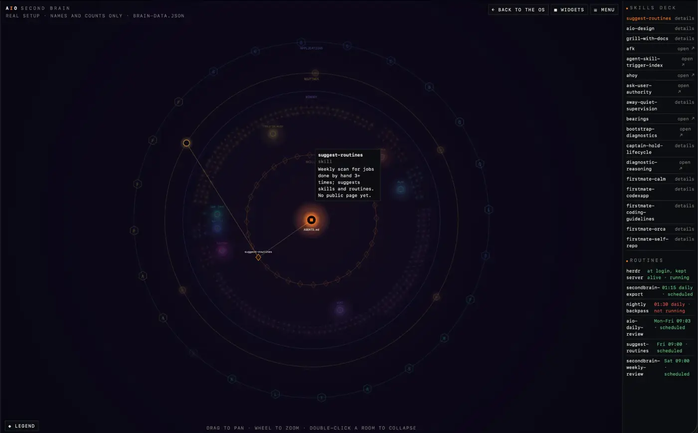

Field Notes · Setup
A map of my mind you can read without leaving it
One page that shows my whole agent setup as rings around one file, and a rule I won't break: read in place, never navigate away
Glossary: the words this post uses
- Second brain :
- my notes and setup, kept as plain files so people and agents can both read them.
- AGENTS.md :
- a plain text rules file every agent reads first.
CLAUDE.mdpoints to the same text. - Room :
- a folder of notes about one job (Wiki, Factory, Blog and so on). Each room has its own
CONTEXT.md. - Node :
- one dot or shape on the map: a file, a room, a skill, a routine, an app.
- Ring :
- a circle of nodes of the same kind around the centre.
- Skill :
- a set of instructions an agent loads only when a task needs it.
- Routine :
- a job the computer runs on a schedule, with no one asking.
- launchd :
- the macOS scheduler that runs routines at set times.
- App :
- here, a connector (Gmail, Calendar), a command-line tool, or a project or page I keep.
- JSON :
- a plain text format for structured data.
brain-data.jsonis the page's data file. - Fallback copy :
- the same data pasted inside the HTML, used when you open the page straight from disk.
- Card :
- a small panel with the details of one node.
- Overlay :
- a panel drawn on top of the page, so you never leave the page.
- PR (pull request):
- a request to merge a change, so someone can review it first.
1. The idea
A good city map does not make you walk the streets to learn the layout. You see the whole town at once, then zoom into the street you care about.
My setup was the opposite. Rules in one file, notes in seven folders, skills in a fourth place, scheduled jobs in a fifth. To see "what do I have?" I had to open all of them. So I built one page that draws the lot.
It has one rule: read in place, never navigate away. A node's details show up as a card on the page. You never click through and lose your place.
2. What the page shows
The centre is AGENTS.md. Everything else is a ring around it.

Four things sit on screen at once:
- The ring graph in the middle. Seven rooms, a ring of skills, and rings for memory, routines and applications.
- A left column: apps and pages, each with a status word (connected, installed, live, private, paused).
- A right column: the skills deck and the routines, with their schedules.
- A menu: four layouts (Force, Circle, Hex, Rings), two views (Departments, Folders), search, spin and zoom.
3. Why rooms are rings, with AGENTS.md at the centre
A hospital has one front desk. Every visitor starts there, and the desk sends them to the right ward.
AGENTS.md is the front desk. Every agent loads it first, and it says which room to go to next. So it sits in the middle. My reading of the rings: the further out, the more steps before an agent needs it. That is a design choice, not a measurement.
Each room is a cluster of dots, one dot per file. Seven rooms hold 290 files in 38 folders.
| Room | Files |
|---|---|
| Wiki | 138 |
| Tools catalog | 101 |
| Inbox | 18 |
| Blog | 15 |
| Factory | 10 |
| Content | 7 |
| Cert prep | 1 |
The size of a cluster shows where notes pile up. Wiki and Tools catalog hold most of them. I did not plan that. The map showed me.
Double-click a room to fold it into one hub with its count. That is how I look at the shape without the noise.
Test: jq '[.rooms[].folders[].count]|add' brain-data.json prints 290, and jq '[.rooms[].folders|length]|add' prints 38.
4. The skills deck
A toolbox only helps if you can see what is in it. A skill is a tool an agent picks up when the job calls for it.
The right column lists all 32 skills in a deck. Each row says "details" or "open". "Details" shows a card on the page. "Open" goes to a public page, and the arrow tells you before you click. On the map, each skill is a diamond on the first ring, so the ring is the count: 32 diamonds.
Hover a skill and two lines appear. One runs to the centre, because every skill is reachable from the base rules. The other runs to the routine that uses it, if there is one.
Test: jq '.skills|length' brain-data.json prints 32.
5. Routines, with schedules
The map shows what exists. Routines show what runs while I am away. There are six, each with a time.
| Routine | When | Status |
|---|---|---|
| herdr server | at login, kept alive | running |
| secondbrain-export | 01:15 daily | scheduled |
| nightly backpass | 01:30 daily | not running |
| aio-daily-review | Mon–Fri 09:03 | scheduled |
| suggest-routines | Fri 09:00 | scheduled |
| secondbrain-weekly-review | Sat 09:00 | scheduled |
Look at the "not running" row. The page shows it in red. I like that. A map that only shows good news is not a map. It also fits a point from my last post: a check you cannot see failing is a check you cannot trust.
6. Apps, with live status
Ten apps, eight projects and six pages sit in the left column. Each row has one status word, and the word means something.
- Apps: five connectors (connected), four command-line tools (installed), one model router.
- Projects: two live on the web, one public repo, three private, one local, one paused.
- Pages: learn pages, a blog draft, and three pages about FirstMate.
Test: jq '.apps|length, (.projects|length), (.pages|length)' brain-data.json prints 10, 8, 6.
7. How the data is built
The page does not know my setup. It reads one file, brain-data.json, and draws what is in it.
my real folders --> build script --> brain-data.json --> the page
(counts) (names + counts)The file holds names and counts only. It has room and folder names with file counts, skill names, routine names and times, and app names. It has no file names, no paths, no mail, no calendar contents and no keys. The file says so in its own meta note, and the page header prints "names and counts only" so a viewer can see it too.
Two small details:
- A browser blocks the fetch when you open the page straight from disk. So the build script also pastes a fallback copy of the JSON inside the HTML. The page says "inline copy" when it uses it.
- The
?data=option accepts only a plain file name. A link cannot point the page at another site.
Test: jq '.meta' brain-data.json shows the "names and counts only" note.
8. The design rule: read in place, never navigate away
When I click a node, I want an answer, not a trip. Each trip costs me my place on the map.
- Every node gets a card. Name, kind, a line on what it is, and links.
- Cards overlay the map. The map keeps its zoom and its folded rooms.
- Links leave only when you ask. A link that goes elsewhere says "open" with an arrow. Nothing else moves you.
Today this works for hover cards and click-for-detail cards. A longer read does not exist yet. That is the next section.
9. Coming: a reading overlay, a bots graph, a guided tour
coming An open pull request adds three things. It has not merged as I write this. Treat all three as coming, not shipped.
- A bots graph. The same map style for the agents themselves. An operator and an assistant bot sit in the middle, with crew, harness and tools in rings around them. Each bot's card says what it may do freely, what it asks me about, and what it never does.
- "Explain this screen". A scripted tour. It dims the page, outlines one section at a time, and shows a short caption with Back, Next and Done. It makes no model calls. It is a fixed script.
- A right-side reading overlay with a logical reading order of notes. It is a path through the nodes, drawn on top of the map. You read it start to end and never navigate away.
I will update this section when the pull request merges.
10. What I would change
- Room cards show folder counts, not a note. I want one line per room.
- Statuses are as of the build. A live ping would be better.
- At phone width the side columns become a drawer. I want to check that again once the reading overlay lands.
- The reading order is still a plan. I think it matters most, because a map with no route is a poster.
Privacy scan
I scanned this page and its markdown twin before commit, and the site copy again before it went live. Hits are lines that match.
| Pattern | Hits |
|---|---|
| Local paths (home and user folders) | 0 |
| Email addresses | 0 |
| Private hostnames, personal names, private project names | 0 |
| Keys, tokens, passwords | 0 |
| Counts in this post against the data file (290 files, 38 folders, 32 skills, 10 apps, 8 projects, 6 pages, 6 routines) | all match |
The screenshot is cropped to drop the left column, which lists project names I keep private. The data file holds names and counts only.
Credits
- Kun Chen: FirstMate and the AXI tools whose names show up in the map.
- Jake Van Clief: the folder-per-room structure (ICM) the rooms follow.
- Thoughtworks: the Adopt, Trial, Assess and Hold radar idea, borrowed in the last post.